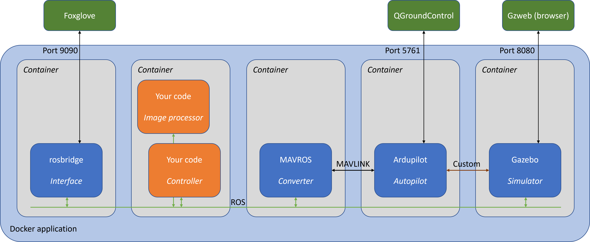

9. Brief outline of the Starling framework¶
The template is built on the Starling framework which combines open-source components to provide a realistic, cross-platform simulation for drone flight: - Gazebo, a physical and visual simulation package - Ardupilot, a free autopilot software with MAVLINK interfacing and simulation capability - ROS, a popular software framework for robot interfacing, plus the MAVROS package for connecting MAVLINK drones to ROS. - OpenCV, an image processing library with Python support - Docker, a system for packaging and deploying
Surely there's a simpler way? Almost certainly, but you wouldn't learn so much. These are the standard tools of the robotics trade, and while it'll take you a while to learn them, the skills you get will go far beyond this project. This way also means we can do more with Starling, like migrate controllers from simulation to actual flight.

Starling uses Docker to package up the simulation framework for use on different computers. I found the Duckietown introduction really good for getting a feel for Docker. The docker-compose up --build command that starts the simulation actually launches a set of containers on your computer, a bit like a set of virtual computers all networked together. The file docker-compose.yml (which you will not need to edit) provides the 'recipe' for what containers to run. In our case there are five, illustrated in the figure above.
- Gazebo, the physics simulator. Given commands from the autopilot, it simulates how the drone moves. Gazebo also provides graphics, simulating the drone cemra feed and sending it to ROS, and providing a representation of the world for us to spy on via the browser interface on
localhost:8080.
Work in progress